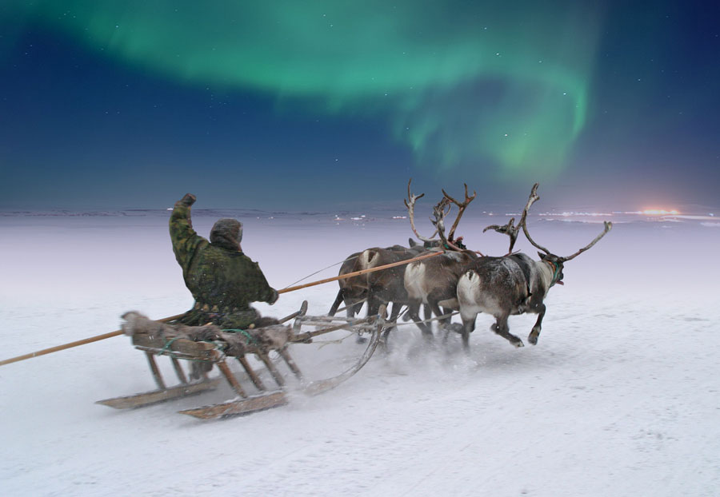
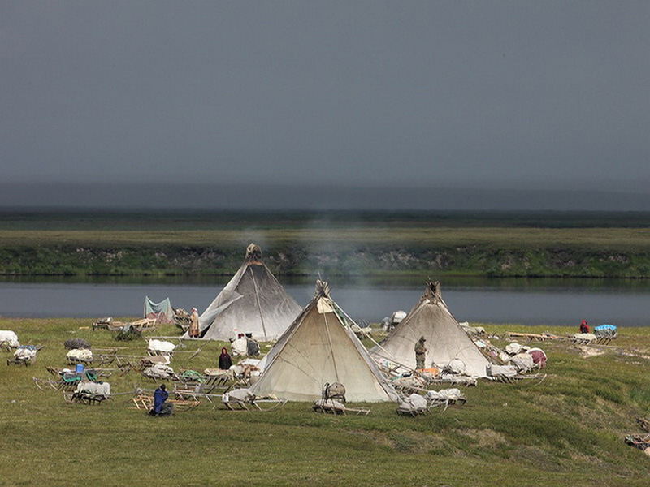
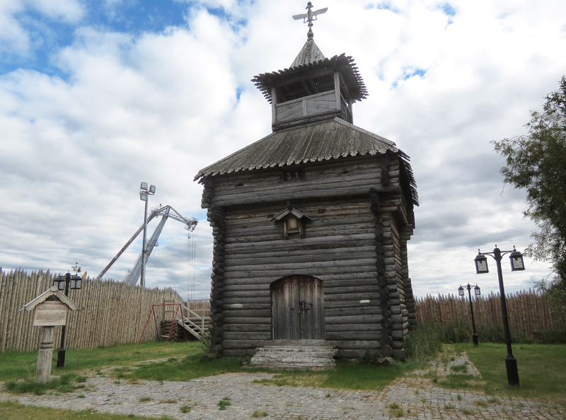
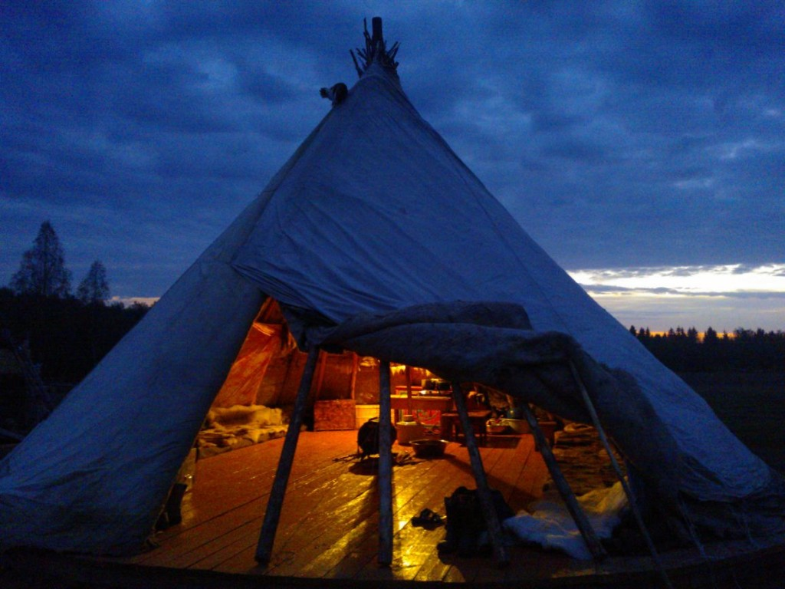
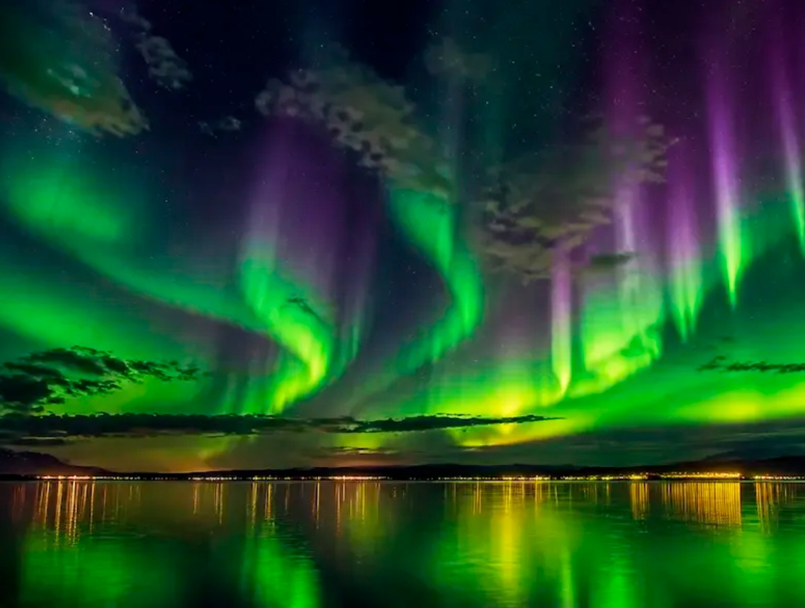
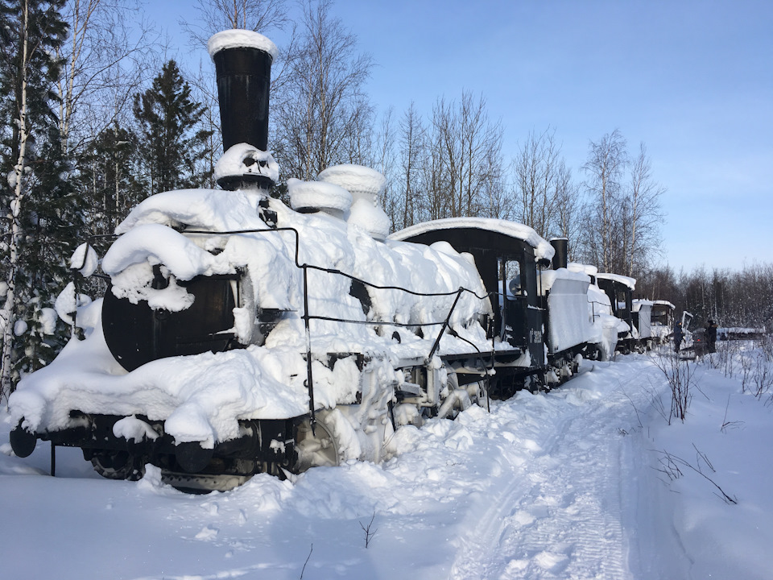
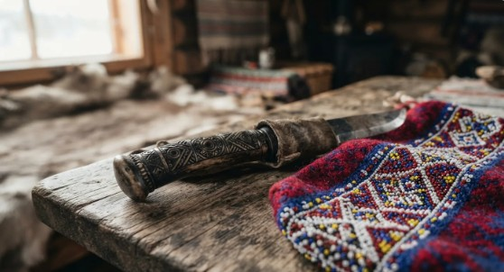

край земли, где заканчивается карта.
"Ямал" в переводе с ненецкого значит "край земли". Полуостров уходит в Карское море почти на семьсот километров.

Мамонты в вечной мерзлоте.
Задолго до людей Ямал принадлежал мамонтам, и мерзлота сохранила их лучше любого музея.
В 2007 году оленевод Юрий Худи нашел на берегу реки Юрибей маленького мамонтенка. Его назвали Любой. Возраст находки оценивают примерно в сорок две тысячи лет.

Острог у слияния двух рек.
В 1595 году русские служилые люди поставили Обдорский острог там, где Полуй впадает в Обь.
Крепость стала опорой на дальнем севере: сюда привозили ясак, отсюда уходили экспедиции за Урал. Так началась история города, который сегодня называется Салехард.

Те, кто знал тундру всегда.
Ненцы кочевали по Ямалу задолго до крепостей и будут кочевать после газовых труб.
Стада оленей идут за пастбищами сотни километров, зимой к югу, летом к морю. Дом семьи, чум, собирают за пару часов. Оленеводство остается главным делом тундры и сегодня.

Округ получает имя.
В декабре 1930 года создан национальный округ, позже названный Ямало-Ненецким.
В 1933 году Обдорск переименовали в Салехард, что по-ненецки означает "город на мысе". Город лежит почти на самом полярном круге.

Мертвая дорога.
С 1947 года начали строить железную дорогу Салехард — Игарка, стройку №501.
Рельсы прокладывали заключенные, по болотам и мерзлоте. После смерти Сталина в 1953 году работы остановили, и дорога осталась заброшенной. Паровозы и мосты до сих пор стоят в тундре, и сюда едут за тишиной и памятью.

Север, который согревает страну.
С 1947 года начали строить железную дорогу Салехард — Игарка, стройку №501.
В декабре 2017 года заработал завод "Ямал СПГ", и газ из тундры пошел на корабли по всему миру. Вахтовые поселки выросли там, где недавно стояли чумы.

Ямал не рассказывают, а проживают
Оленеводы, ученые, газовики и дети тундры живут на одной земле. Это и есть вся история: от мамонтов до наших дней.